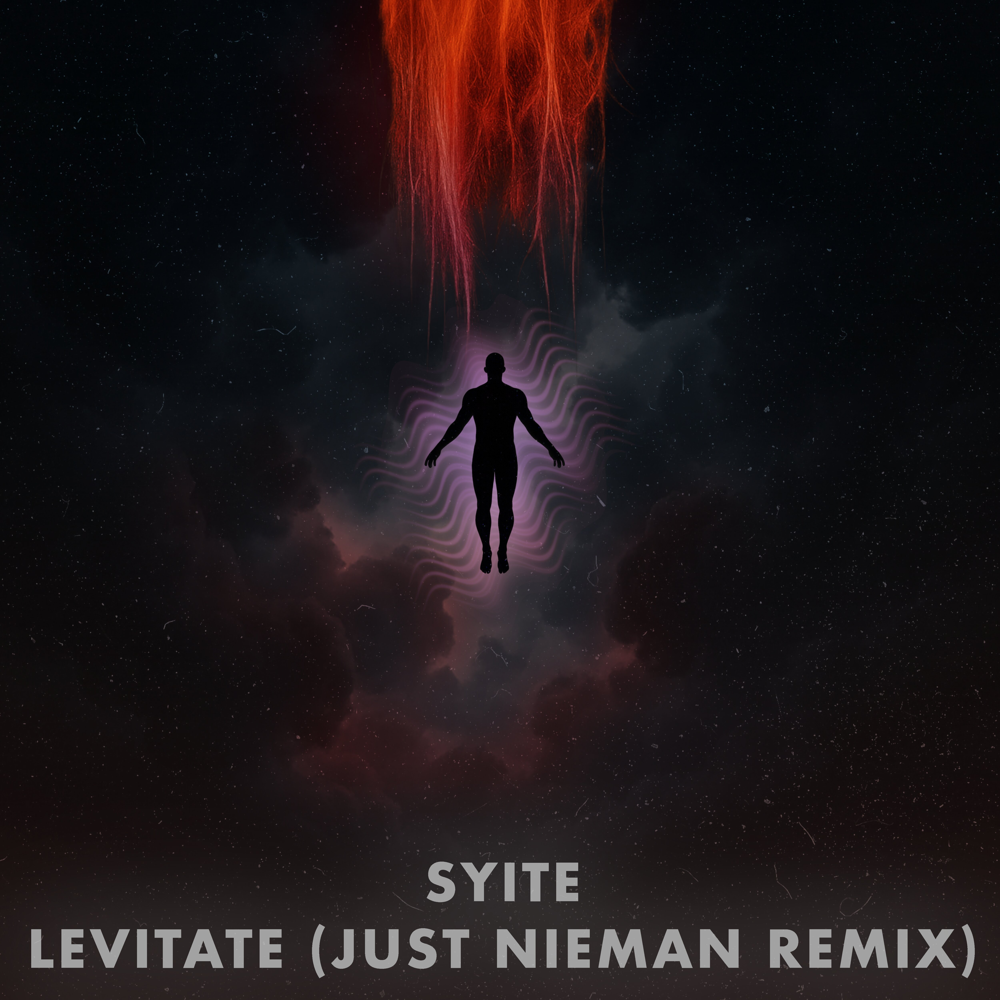

Nothing announced just yet.
New dates will show up here as soon as they are locked.
Multi-genre EDM producer and DJ
Just Nieman is an Asheville-based DJ and producer moving between bass, and tech house. He’s been active in the local scene since 2017 and is also a co-founder of Pluto Events, a crew bringing underground sounds to new spaces around Asheville.
Nieman played his first set at a Halloween house party in 2017, repeating it the following year before the world paused. After a breakup in 2021, he dove deeper into music as a way to rebuild and re-discover himself, landing regular gigs at Asheville Beauty Academy from late 2021 through 2022. By 2023 he launched Pluto Events with friends, creating a platform to push the local underground further.
His project is rooted in self-discovery and connection: music as a way to grow, connect with others, and turning nightlife into something more than escape. His releases like “Lives,” “My Music,” and “It’s Not That Deep” reflect that while spanning styles across genres.
Check below for links to the latest releases, and swing by SoundCloud for bootlegs and flips.
Nothing announced just yet.
New dates will show up here as soon as they are locked.
